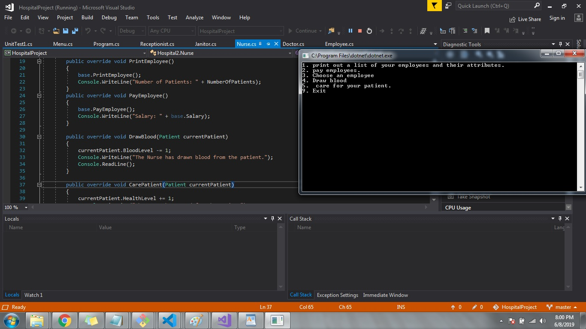

Hospital Project
- Object Oriented Programming
- Lists
- Objects
- Test Driven Design
Information Technology professional with over 15 years of experience working with local and state educational agencies, rollouts for large and medium sized companies networks. Diverse experience includes trouble shooting, programming, managing employees, developing marketing strategy, website design, and marketing. Top level time management skills and orgranizatioin; deadline oriented with the ability to operate within a budget. Skilled at multi-tasking. Comfortable working in a fast paced, ever-changing environment. Extremely personable with strong customer focus. Exstensive work as a collaborative team member.
I would be happy to talk to you about how I can meet your needs!
C# • .NET Core • Active Server Pages / ASP.net • JavaScript • Flexbox • MVC • HTML • CSS • Grid • TDD • Agile (Scrum) • Object Oriented Programming (OOP) • AJAX • JSON • React • Restful APIs • Responsive Design / Mobile • Structured Query Language (SQL) • Relational Databases / MS SQL • Source Control / GitHub
Below are screenshots of projects that I have completed.